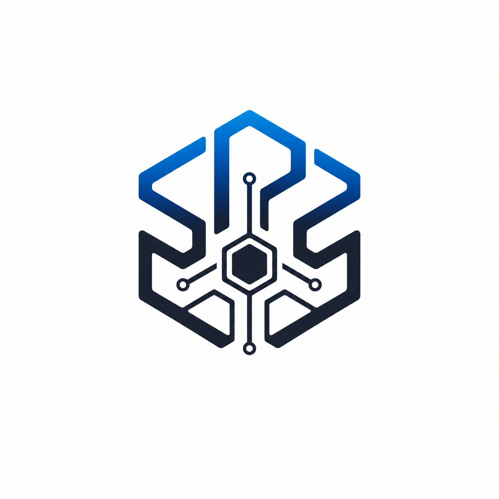

01
Room은 맥락을 보존합니다
프로젝트 안에서 Agent별 장기 대화를 유지하고, 역할별 운영 규칙을 적용합니다.

SPS 초대 받은 팀원 로그인REDON GAMES · PRIVATE DESKTOP BETA
작은 팀을 위한, 실제 컴퓨터 기반 AI 작업공간.
역할별 AI는 Room에서 맥락을 유지하고, Lead AI는 목표별 Task를 만들어 승인된 Worker에게 일을 맡깁니다. 실행은 각자의 컴퓨터에 있는 CLI와 로컬 도구로 이루어집니다.
현재 Windows Desktop 비공개 베타를 운영 중입니다.
Lead creates a Task
결과와 막힌 이유는 상위 Room으로 돌아옵니다.
A WORKPLANE, NOT A CHATBOT
SPS는 게임, 웹, 앱처럼 서로 다른 제작 방식에 맞게 역할과 플러그인을 조합할 수 있는 로컬 우선 AI 개발 환경입니다.
01
프로젝트 안에서 Agent별 장기 대화를 유지하고, 역할별 운영 규칙을 적용합니다.
02
Lead가 작업의 결과, 담당자, 완료 조건을 정하면 Worker가 같은 Task 안에서 수행합니다.
03
CLI 로그인, 로컬 모델, 작업 폴더는 각 컴퓨터에 남고, 허용된 조합만 실행합니다.
THE SPS LOOP
사용자와 Lead AI가 설계, 구현 범위, 우선순위를 함께 정합니다.
Lead만 필요한 Worker에게 목표와 완료 기준을 담아 일을 할당합니다.
Worker는 자신의 컴퓨터에 연결된 CLI, 로컬 AI, 전문 도구를 사용합니다.
완료와 차단 사유가 상위 Room에 남아 다음 결정을 바로 이어갈 수 있습니다.
SPS DESKTOP BETA
현재는 Owner가 팀원을 초대하고 Windows Desktop을 연결하는 비공개 베타 단계입니다. 초대 받은 팀원은 로그인 후 자신의 컴퓨터를 Node로 연결할 수 있습니다.